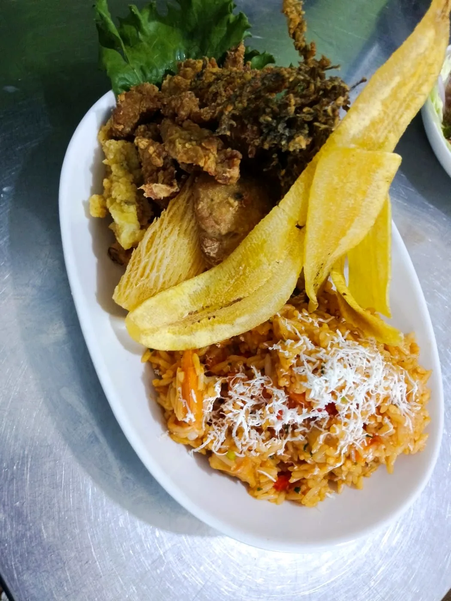
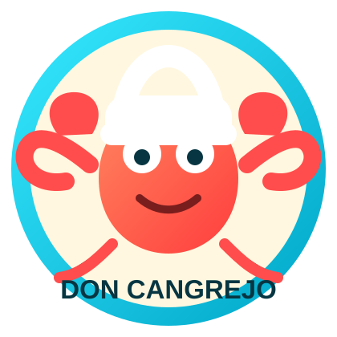
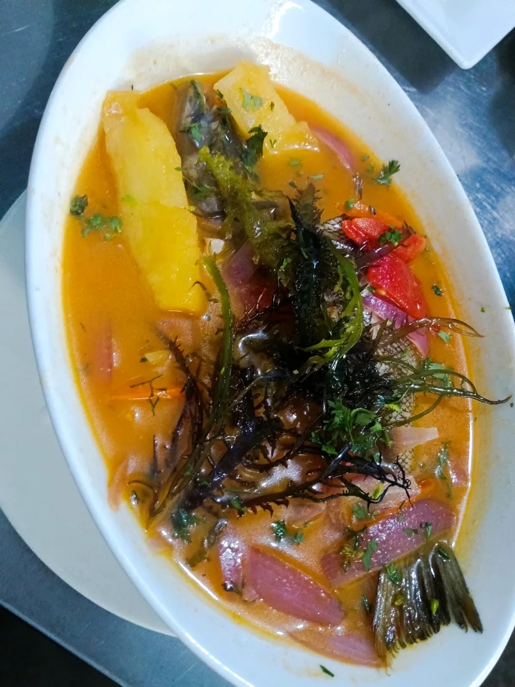
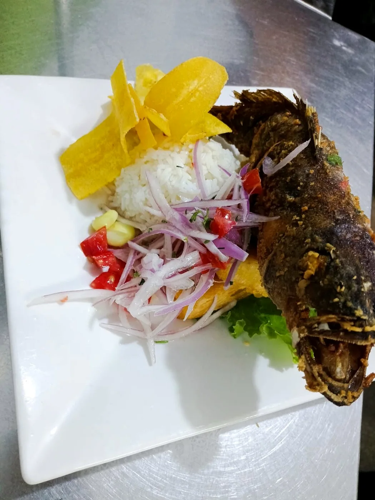
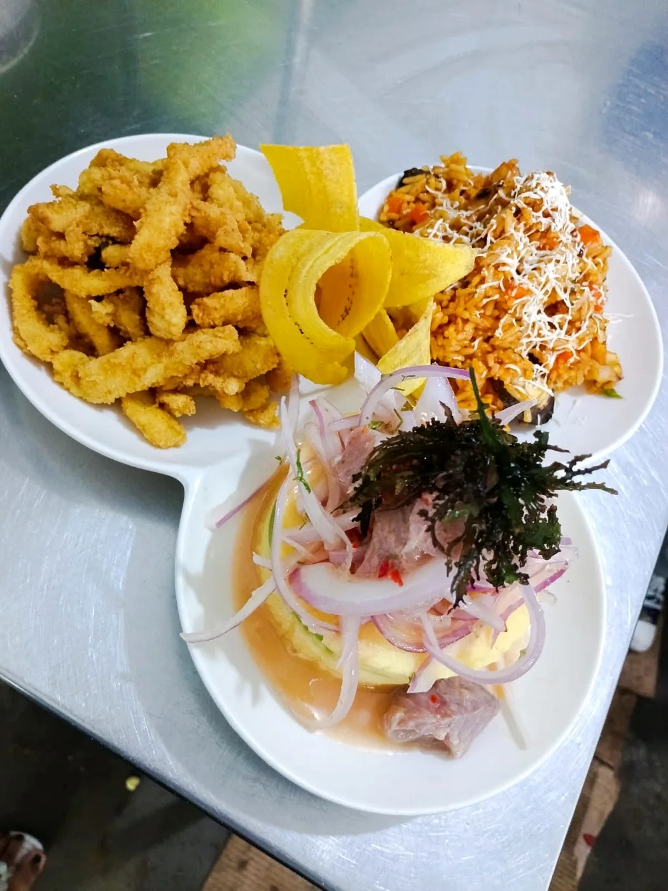
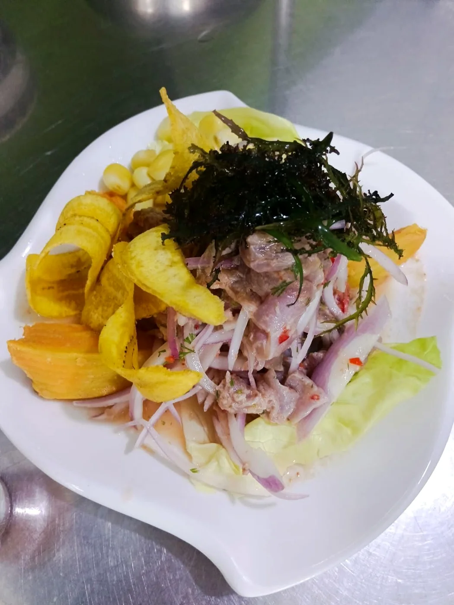
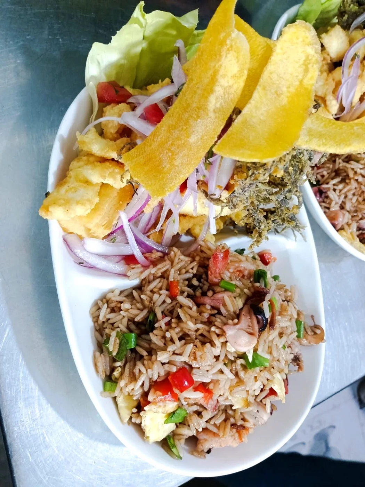

Carta marina de D’Miriam con platos reales, fotos actuales y pedidos por WhatsApp para reserva o recojo.


Buscador, filtros por categoría y detalle de platos.
El cliente puede indicar picante, sin picante u observaciones por plato.
Permite consultar la carta en mesa, reservar con pago previo o pedir para recojo.
Platos reales de la carta, con fotos actuales y precios por confirmar.
Fotos reales del local para dar confianza al cliente.





Av. Alameda, Mercado Amarillo, puesto - Callao
Referencia: Mercado Amarillo, Callao.
El QR para imprimir está separado de la carta digital, para usarlo en mesas o mostrador.
Ver QR imprimible